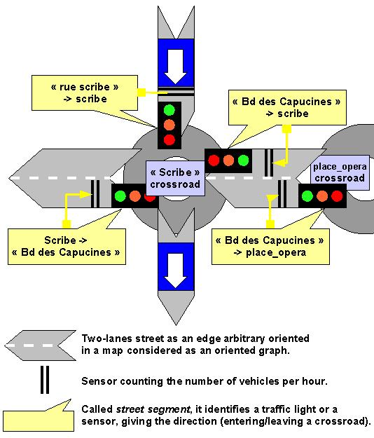
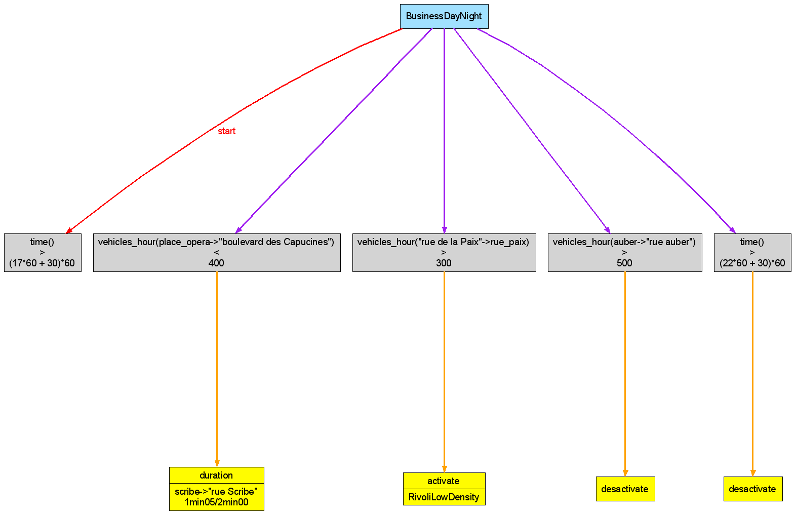
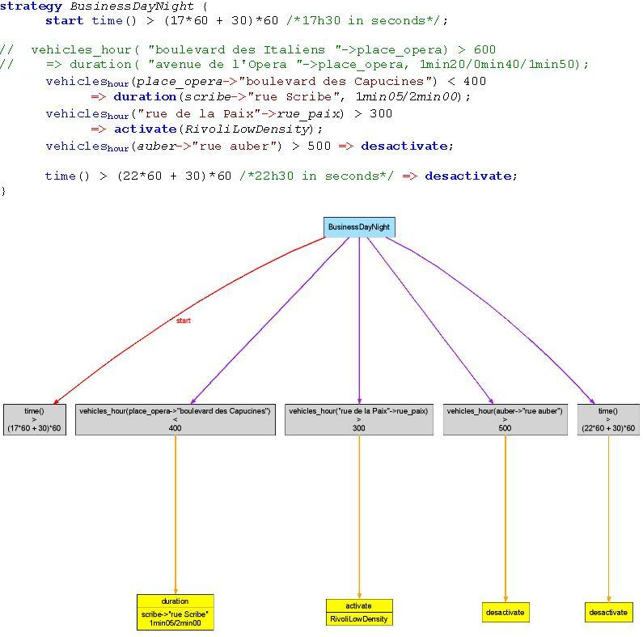

A Generative Programming
approach consists of automating programming tasks for software and product-line software families. The combination
of parsing and code generation helps greatly to accelerate development processes. This tutorial tackles some of the
functionality of CodeWorker, a parsing tool and a source code generator,
and shows some concrete uses for inspiring the reader.
Let's say you are writing software for controlling all the traffic lights of a town, applying strategies that may
react in real-time to the state of the traffic. Sensors count the number of vehicles per hour reaching or leaving
a crossroad by a given street.
A lot of well-specified control strategies have to be implemented both in C++ for the real-time application and
in Java for a traffic light simulator. The documentation of the project must include a diagram for each strategy,
representing them as graphs in PNG pictures.
You can't build a generic mechanism for interpreting strategies dynamically, because you use a third party rule
engine for executing them whose framework obliges you to hard-code them almost entirely.
As you know XML, you decided to specify the strategies in XML and, from here, to generate as much code as possible
with an XSL transformation or a similar process. But two constraints could make it difficult. Firstly, you have
to preserve some hand-typed code in the core of the generated code and secondly, you would like to inject
generated code somewhere in a hand-typed piece of source code.
Another constraint will decide for you. The customer wants to be able to control the strategies you wrote in XML,
to change them or simply to contribute new ones. But he doesn't feel confident enough with this syntax, so you
propose that they spend a few days on writing a GUI for editing strategies in a graphical way. Not granted.
Never mind, you finally decide to write your own little language, using a quite convenient syntax. You'll parse
it and generate the required source code, pictures and documentation from the syntactic tree. To have a glance
at what the language of strategies looks like, see next section.
For a more concise description and for recapitulating the items, we'll explore further:
All these tasks require a highly tailor-made solution, depending on the technical and Business constraints
imposed on the project. They will be fully implemented in CodeWorker, a
well-adapted tool for this kind of development process automation.
2 How parsing and code generation are chained
CodeWorker executes a leader script, which takes charge the driving
of these parsing and code generation tasks:
demo.cws
// iterate all strategy file having the extension ".tlc"forfile strategyFile in"*.tlc" {
// The BNF parse script "TrafficLight.cwp" applies on the strategy file// and populates the global variable 'project'.parseAsBNF("TrafficLight.cwp", project, strategyFile);
// Iterate all strategies and generates a C++ header and body but also// a picture for each.// The template-based script applies on a sub node of the parse tree,// corresponding to the specification of the current strategy, and generates// a C++ file or a Graphviz input file.foreach i inproject.strategies {
generate("TrafficLight-headerC++.cwt", i, "output/" + i.name + ".h");
generate("TrafficLight-bodyC++.cwt", i, "output/" + i.name + ".cpp");
// Generate the input file for Graphviz, which will build a PNG picturegenerate("TrafficLight-Graphviz.cwt", i, i.name + ".grz");
system("../../../bin/dot.exe -Tpng -o " + i.name + ".png " + i.name + ".grz");
}
// The translation script "TrafficLight2OpenOffice20.cwp" applies on the// strategy file and generates the content of an Open Office 2.0 text// document. We didn't put here the zip compression of the generated file// with some others and its renaming to a ".odt" extension.translate("TrafficLight2OpenOffice20.cwp", project, strategyFile, "OpenOffice2.0/content.xml");
}
// strategies for test are injected directly into the Java simulatorexpand("TrafficLight-embeddedJava.cwt", project, "TrafficLightSimulator.java");
// Save the parse tree to a XML file, just for showing the structure of the treesaveProject("strategies.xml");
This script iterates all files of the current directory describing one or more strategies. For each strategy
contained in a file, it parses the content and generates the C++ source code and produces a picture. Then, it
generates an Open Office 2.0 text document of the file.
The following command line runs the script:
codeworker demo.cws
3 Creation and parsing of the DSL
Here is a sample of what a description of strategy looks like:
BusinessDayNight.tlc
strategy BusinessDayNight {
starttime() > (17*60 + 30)*60 /*17h30 in seconds*/;
// vehicles_hour("boulevard des Italiens"->place_opera) > 600// => duration("avenue de l'Opera"->place_opera, 1min20/0min40/1min50);vehicles_hour(place_opera->"boulevard des Capucines") < 400
=> duration(scribe->"rue Scribe", 1min05/2min00);
vehicles_hour("rue de la Paix"->rue_paix) > 300
=> activate(RivoliLowDensity);
vehicles_hour(auber->"rue auber") > 500 => desactivate;
time() > (22*60 + 30)*60 /*22h30 in seconds*/ => desactivate;
}
3.1 Specification of a strategy
A name is assigned to each strategy, for referencing them without ambiguity. A strategy is inactive by default,
and a start clause specifies when to wake it up. Then, the rules attached to an active strategy are executed
regularly. A rule triggers some actions if its antecedent (a boolean expression) is valid.
In the precedent section, the sample shows a strategy named BusinessDayNight, becoming active after 17h30. The
first rule triggers an action once the number of vehicles coming to place de l'Opéra crossroad from
boulevard des Italiens street exceeds 600 per hour.

An action may activate another rule, desactivate the current one or change the time during when a traffic light
stays green. The latter action is called duration and requires the coordinates of the traffic light (street,
crossroad and direction: coming in or out of the crossroad) and the duration for staying green. It may be followed by
other durations, to apply on other traffic lights, revolving around the crossroad in the anticlockwise.
Note that for facilitating the translation of the DSL to C++ or Java, boolean expressions used for expressing
conditions and antecedents of rules are common enough to compile directly in these two programming languages.
3.2 Parsing of a strategy written in the DSL
Now, let's attack the parse script of the DSL in
CodeWorker. The script defines
BNF (Backus-Naur Form) production rules, with some
variations in the notation and enriching of various features to help build a grammar faster for the purpose
of being pragmatic.
BNF vocabulary
We have to define the vocabulary currently used in BNF notations. Please, don't run away. We'll explain each
word further in situation.
The declaration of a BNF production rule starts with its name, generally followed by the symbol ::=,
which announces the definition of the production rule itself. The definition is a sequence of BNF symbols or
alternatives of BNF sequences, which ends with a semi-comma.
A BNF symbol may be a call to a production rule (known as a non-terminal) or a well-defined sequence of
characters (known as a terminal), which must match exactly the current scanned input as a subset. CodeWorker
accepts another type of BNF symbols that it calls BNF directive. It may be a hard-coded non-terminal, such
as the production rule of a C-like string or a C-like identifier, or a directive concerning the way the parser works,
such as the indication of what kind of insignificant characters to ignore in the scanned input, between each
BNF symbol execution. A BNF directive always starts with the symbol #.
A BNF sequence is a sequence of BNF symbols, which are applied in the order of the controlling sequence. If a
symbol fails in matching the scanned input, the iteration of the BNF sequence stops and the BNF sequence is
considered having failed.
An alternative of BNF sequences executes BNF sequences in the order of the controlling sequence up to the first
one to succeed.
Once serialized in XML, the CodeWorker's internal parse tree of the strategy BusinessDayNight
should look like:
We'll see step by step how to populate this parse tree:
TrafficLight.cwp
TrafficLightControl::=#ignore(C++) // ignore C++-like comments and whitespaces#continue// a syntax error will occur if the BNF sequence fails[strategy]*// repetition of strategies consuming#empty// end of file necessarily reached after the reading of strategies
;
Translation
This production rule consists of reading zero, one or more strategies, ignoring whitespaces and
C++-like comments. Once all strategies have been parsed, the end of file must be reached or a syntax error occurs.
This production rule is called TrafficLightControl and its definition is composed of a unique BNF sequence,
ending with a semi-comma.
The BNF sequence contains 3 BNF directives and one repetition. The first directive, #ignore(C++), means
that whitespaces and C++-like comments are insignificant for the parsing: the grammar won't see them.
The second directive, #continue obliges the rest of the BNF sequence to be valid. If a BNF symbol
fails, a syntax error will occur automatically, reporting as accurately as possible the BNF symbol which fails and
the location in the scanned input (line and column numbers).
The third and last directive expects the end of file, and then fails if the current position in the scanned input
isn't at the end.
The repetition [strategy]* is a regular expression, which means that the non-terminalstrategy
may apply zero, one or more times with success.
BNF declaration of a strategy
strategy::=#readIdentifier:"strategy"// identifier must be worth 'strategy'#continue// the rest of the BNF sequence doesn't have to fail#readIdentifier:sName // assign the consumed id to a local variable// the '=>' symbol escapes the BNF to execute a non-BNF instruction=>ifthis.strategies.findElement(sName) {
// Error! The strategy already exists in the parse tree!error("cannot define the strategy '" + sName + "' twice!");
}
// insert the strategy to the parse tree and keep a reference=>insertthis.strategies[sName].name = sName;
=>localref theStrategy = this.strategies[sName];
'{'start_condition(theStrategy) // when to trigger the strategy[rule(theStrategy)]+// at least one rule to parse'}'
;
Translation
If the production rule matches an identifier and if this identifier is worth the keyword
strategy, then there is no ambiguity: it's about a strategy description and so, the BNF sequence must
be correct up to the trailing brace. The strategy must never have been defined before or an explicit error message
raises. The production rule inserts the new strategy into the parse tree and parses the start clause and
all rules.
The production rule strategy is also composed of a unique BNF sequence. The BNF directive #readIdentifier
is a hard-coded non-terminal, which scans a C-like identifier. In #readIdentifier:"strategy", the
scanned identifier is compared to the constant string "strategy" and must be equal, whereas in
#readIdentifier:sName, the scanned identifier is assigned to the local variable sName,
declared implicitly here.
The => symbol is followed by an instruction ending with a semi-comma or a block of instructions enclosed
between braces. This looks like a kind of escape mode which notifies the BNF engine that this code has nothing to do
with BNF and that it is more common scripting intructions, like control statement, computations, variable
assignments... The first one serves to raise an error message if the association table containing the parse tree
of each strategy already owns an entry key with the name of the current strategy. The next ones serve to populate
the parse tree or to declare a local variable pointing to the parse tree of the strategy.
Note that '{' and '}' are both terminals.
The 'start' clause
start_condition(theStrategy : node) ::=#continue#readIdentifier:"start"// add to the parse tree the conditioncondition:theStrategy.start // to start running the strategy';'
;
Translation
This production rule must match an identifier being worth start. A condition ending
with a semi-comma must follow the keyword. The condition isn't decomposed to a syntactic tree: it's sufficient for
us to keep it as a sequence of characters stored into the strategy.
start_condition requires an argument, which is a reference to the parse tree of the strategy. This parse
tree will receive a new branch (or attribute) called start and being worth the scanned condition.
BNF declaration of a rule
rule(theStrategy : node) ::=condition:sAntecedent // the antecedent of the rule is a condition#continue"=>"=>pushItem theStrategy.rules; // add a new rule in the list// access to the last element of the list for inserting a new attribute=>insert theStrategy.rules#back.condition = sAntecedent;
=>pushItem theStrategy.rules#back.actions; // add a new action#readIdentifier:sAction // keyword of the action to execute// call of a generic BNF non-terminal, resolved by 'sAction'rule_action<sAction>(theStrategy.rules#back.actions#back)
[','#continue// a comma separates the actions=>pushItem theStrategy.rules#back.actions;
#readIdentifier:sAction
rule_action<sAction>(theStrategy.rules#back.actions#back)
]*';'
;
Translation
If it finds an antecedent, rule parses the antecedent and the consequent of a strategy rule.
The antecedent is simply a condition ending with the symbol =>. The consequent is a series of actions
separated by a comma. It ends with a semi-comma.
The parse tree of the new rule is pushed at the end of the list of rules (instruction pushItem),
called theStrategy.rules. The last element of the list is accessible by writing theStrategy.rules#back.
To prevent an eventual growth of action types, the grammar uses generic non-terminals. generic is to understand
with a similar meaning as in generic programming. A generic non-terminal is a concept developed in CodeWorker,
which consists of writing several instances of a BNF production rule. For example, the little language admits three
action types for the moment. We'll write 3 instances of the production rule rule_action, parameterized by a
constant string being the name of the action:
rule_action<"duration">(theAction : node) ::= ... // parsing of a 'duration' action
rule_action<"activate">(theAction : node) ::= ... // parsing of a 'activate' action
rule_action<"desactivate">(theAction : node) ::= ... // parsing of a 'desactivate' action
The BNF engine will resolve the call to the correct instantiation of the production rule at runtime. Here, one
reads the name of the action, used to resolve the switching on the correct instantiation.
...
#readIdentifier:sAction // keyword of the action to execute
// call of a generic BNF non-terminal, resolved by 'sAction'
rule_action<sAction>(theStrategy.rules#back.actions#back)
A street segment gives the coordinates of a traffic light, knowing the street and the
crossroad and the direction: an arrow indicates whether it enters or leaves the crossroad by the street. Some
clarifications about the consistency: to avoid any ambiguity, the map is seen as an oriented graph, where
crossroads are the nodes; when leaving a crossroad, the traffic light is the one on the other lane.
One of the only interest on this production rule is to show what an alternative of two BNF sequences looks like. The
sequences are separated by the alternate symbol |. The second sequence is executed if and only if the first
one has failed.
Note that the BNF directive #readCString is an hard-coded non-terminal, which reads a C-like constant
string put between double quotes. It transforms the scanned value before returning, removing the double quotes and
resolving escaped characters.
Scans a time and converts it to seconds
// This BNF non-terminal reads a time like 1min15 and// restitutes it in seconds: the keyword 'value' means that// the non-terminal will return its own transformation rather// than the consumed character sequence.timeInSeconds:value::=#readInteger:iMin
#continue"min"// arithmetic expressions are enclosed between '$' symbols=>timeInSeconds = $iMin * 60$;
#readInteger:iSec
=>timeInSeconds = $timeInSeconds + iSec$;
;
Translation
This production rule reads a time like 1min20 and converts it to seconds (80 seconds
for the example) and returns this transformed value, rather than the scanned characters as usual.
If a production rule intends to transform the scanned value before it returns, it must indicate that willing in the
prototype, using the keyword value after the rule's name, looking like
timeInSeconds:value ::= ...;. Then, the production rule declares a local variable having
the same name, timeInSeconds for the example. The transformation of the scanned value must be assigned
to this variable.
Note that CodeWorker works on strings by default and isn't aware of numeric values, but you can force the resolution
of an arithmetic expression, enclosing it between $ symbols. So,
timeInSeconds = $timeInSeconds + iSec$; sums timeInSeconds and iSec,
while timeInSeconds = timeInSeconds + iSec; concatenates the string value of the variable
iSec to the end of timeInSeconds.
4 Code generation and program transformation
In CodeWorker, scripts generating code are called template-based scripts and work in the same spirit as
PHP scripts. Syntactically, they mix both rough text to write to the output file and scripting instructions to
execute.
4.1 Traditional generation of code: example with the C++ header file
The most widespread way of generating code consists of writing 100% of a file, erasing what could have been
included by hand between two cycles of generation. The C++ header file we want to generate from the
BusinessDayNight strategy should look like:
The following template-based script takes charge of the whole generation of the C++ header file:
TrafficLight-headerC++.cwt
#ifndef _@this.name@_h_
#define _@this.name@_h_
#include "TrafficLightStrategy.h"
class @this.name@ : public TrafficLightStrategy {
public:
inline @this.name@() {}
virtual ~@this.name@();
virtual bool start() const;
virtual int executeRules();
private:
@foreach i inthis.rules {
@ bool executeRule@i.key()@();
@
}
@};
#endif
A template-based script starts directly in rough text. The symbol @ (or <%
alternatively) toggles the execution of scripting instructions, which may end by another occurence of the
@ symbol (or %>) to come back to rough text.
Example
...
private:
@foreach i inthis.rules {
@ bool executeRule@//...
}
Note: an expression enclosed between @...@ (or <%...%>) is resolved and the
result is written to the output file. Example: #ifndef _@this.name@ means that the
name of the current strategy must be written between some rough text.
4.2 Generation preserving hand-typed code: example with the C++ body file
We'll assume that the developer may have to implement some specific code by hand before the method executeRules()
returns while the strategy is active.
A manner of inserting hand-typed code in the core of a generated file is to anchor a protected area the interpreter
detects and preserves from a generation cycle to another. In the source code, a protected area starts and finishes with
a special comment. The special comment begins with ##protect## and is followed by a C-like string,
which is a unique key designating the protected area without ambiguity into the output file. Write the hand-typed
code directly between the special comments.
Format of comments
By default, a comment starts with // and finishes with an end of line (or file),
exactly like a C++ inline comment. Of course, if you decide to insert a protected area into a HTML file or other,
you can stipulate a new format, calling the functions setCommentBegin and
setCommentEnd. If the syntax of comments is too sophisticated to be represented as
a free sequence of characters enclosed between two well-known invariant tags like <!-- and
-->, you can describe the BNF grammar of comments (among others) in the function
setGenerationTagsHandler.
output/BusinessDayNight.cpp
#include"BusinessDayNight.h"
BusinessDayNight::~BusinessDayNight() {}
bool BusinessDayNight::start() const {
return time() > (17*60 + 30)*60;
}
int BusinessDayNight::executeRules() {
int iTriggeredRules = 0;
if (bActive_) {
if (executeRule0()) ++iTriggeredRules;
if (executeRule1()) ++iTriggeredRules;
if (executeRule2()) ++iTriggeredRules;
if (executeRule3()) ++iTriggeredRules;
//##protect##"Post Processing, to handle by hand!"// hand-typed code, added by CLif (iTriggeredRules > 3) setHigherPriority();
//##protect##"Post Processing, to handle by hand!"
}
return iTriggeredRules;
}
bool BusinessDayNight::executeRule0() {
if (!bActive_ || (vehicles_hour("boulevard des Capucines", "place_opera", "c->s") < 400 == false)) return false;
{
int durations[] = {65, 120, -1};
setDuration("rue Scribe", "scribe", "c->s", durations);
}
return true;
}
bool BusinessDayNight::executeRule1() {
if (!bActive_ || (vehicles_hour("rue de la Paix", "rue_paix", "s->c") > 300 == false)) return false;
activateStrategy("RivoliLowDensity");
return true;
}
bool BusinessDayNight::executeRule2() {
if (!bActive_ || (vehicles_hour("rue auber", "auber", "c->s") > 500 == false)) return false;
bActive_ = false;
return true;
}
bool BusinessDayNight::executeRule3() {
if (!bActive_ || (time() > (22*60 + 30)*60 == false)) return false;
bActive_ = false;
return true;
}
To anchor a protected area at the current position of the output file, use the function setProtectedArea
that expects the unique key of the protected area as parameter. The first time, the protected area is empty and
you have to fill it by hand in the output file once the generation has been achieved. The next time, the protected area
will be preserved, even if you change the position of the anchor.
The following template-based script takes charge of the generation of the C++ body file and shows how to anchor
a protected area called "Post Processing, to handle by hand!":
TrafficLight-bodyC++.cwt
#include "@this.name@.h"
@this.name@::~@this.name@() {}
bool @this.name@::start() const {
return @this.start@;
}
int @this.name@::executeRules() {
int iTriggeredRules = 0;
if (bActive_) {
@foreach i inthis.rules {
@ if (executeRule@i.key()@()) ++iTriggeredRules;
@
}
setProtectedArea("Post Processing, to handle by hand!");
@ }
return iTriggeredRules;
}
@#include"TrafficLight-sharedFunctions.cws"foreach i inthis.rules {
@bool @this.name@::executeRule@i.key()@() {
if (!bActive_ || (@convertAntecedent2Cpp(i.condition)@ == false)) return false;
@foreach j in i.actions {
writeAction<j>(j, "C++");
}
@ return true;
}
@
}
Perhaps, you have noticed the preprocessor directive #include"TrafficLight-sharedFunctions.cws". It
means that the content of the referenced file must be included in the script, to replace the directive exactly like
in C or C++. Here, we implement the instantiations of generic functions in charge of generating the Java or C++
source code of each action. They are the equivalent of generic BNF production rules we have encountered in the
parser, but for generating code. They won't learn anything to us, contrary to the function convertAntecedent2Cpp,
explained in the next section.
4.3 Program transformation
A program transformation consists of applying some changes on the source code, like refactoring or optimization for
instance.
The script "TrafficLight-sharedFunctions.cws" contains some functions shared between Java and C++ to
generate a strategy, but one of them has to transform a strategy antecedent to another syntax, also accepted by the
grammar of the DSL and which has the great advantage of conforming to the C++ and Java syntax too!
It seems pretentious to call this manipulation a program transformation, as it applies on a little piece
of strategy description and not on the whole strategy, but it uses exactly the same mechanisms as on a complete
file!
The aim of this program transformation is to change vehicles_hour(place_opera->"boulevard des Capucines")
to vehicles_hour("boulevard des Capucines", "place_opera", "c->s"). A program-transformation script
is a translation script, being able to both execute BNF rules and generate code. Such a script is executed
through the function translate (input/output are files) or
translateString (input/output are strings).
TrafficLight-sharedFunctions.cws
function convertAntecedent2Cpp(sAntecedent : value) {
// this function returns the transformation of the antecedentreturntranslateString({
#implicitCopy// What You Scan Is What You Writeantecedent::=[// consume strings: it may contain 'vehicles_hour' and// we won't transform it into a message#readCString|// if not, perhaps is it an identifier?#readIdentifier:sId
[// facultative sequence: process a transformation// if the keyword is worth 'vehicles_hour'#check(sId == "vehicles_hour")
#continue// from here, the syntax must be correct'('// stop copying to the output what is scanned#explicitCopy// parses the coordinates of a sensor=>local theSegment;
street_segment(theSegment)
')'=> {
// the transformation itself@"@theSegment.street@", "@theSegment.crossroad@", "@theSegment.direction@")@
}
]?|// reading of the char if end of string not reached;// implicit copy to the output string~#empty]*
;
street_segment(theSegment : node) ::=/*[skip]...*/donotcare;
}, this, sAntecedent);
}
The key of a program-transformation script is based on the BNF directive #implicitCopy. It
stipulates that what is scanned from the input must be copied to the output file simultaneously. For our example,
the output is equivalent to the input, except on the function vehicles_hour returning a sensor value.
4.4 Code generation with an external tool
CodeWorker doesn't generate PNG pictures by itself, neither graphs nor charts, but it can generate the input
file of a tool capable of generating pictures. Graphviz is such a tool which
has developed its own Domain-Specific Language
for describing a graph, with nodes and relationships and their graphical properties.
The description of the graph corresponding to the strategy BusinessDayNight is:
In the leader script, the instruction system("utils/dot.exe -Tpng -o BusinessDayNight.png BusinessDayNight.grz")
runs Graphviz with the appropriate parameters:

The template-based script generating the Graphviz input file from the parse tree
of a strategy has no singularities, and so, doesn't deserve to be shown here.
5 Code expansion or how to inject generated code into a hand-typed file
Let's imagine that the developer has decided to include all strategies as inner classes directly in the Java file
of the simulator manager ("TrafficLightSimulator.java"), perhaps for not generating a Java file per
strategy and having then to purge these files properly when a strategy changes its name or disappears.
TrafficLightSimulator.java
package org.trafficlights.simulator;
import org.trafficlights.rules.*;
// All legacy strategies, coming from ".tlc" files, are injected here// in Java, as inner classes.//##markup##"strategies"/*
Here, the developer will directly type some strategies, which aren't
the legacy one, as specified by the customer in ".tlc" files, but those
// that he wants to test before trashing them.
The DSL code inside the ##data## tags isn't Java valid code, so one encloses
the complete markup between comments
//##markup##"DSL: TrafficLight"
//##data##
strategy BusinessDayMorning {
start time() < (6*60 + 30)*60; // activate the rule before 6h30
vehicles_hour("avenue de l'Opera"->place_opera) > 800
=> duration("boulevard des Italiens"->place_opera, 0min50/1min10);
vehicles_hour("boulevard des Capucines"->place_opera) > 700
=> duration(scribe->"rue Scribe", 1min05/1min30);
time() > (9*60 + 30)*60 => desactivate; // inhibate the rule after 9h30
}
//##data##
*/publicclass Simulator {
// This class is implemented by hand and works on strategies// previously declared as inner classes.// ...
}
The strategies have to be injected as inner Java classes at the position marked by the special comment
//##markup##"strategies". When CodeWorker applies a code-expansion, it scrutinizes
the whole processed file for detecting such special comments, then it executes the template-based script
to inject generated code just below the markup. To isolate properly the injected code from the rest of the source
code, the generator encloses the injected code between tags //##begin##"strategies" and
//##end##"strategies" (in our example).
As the same template-based script applies to the whole processed file, a key identifies the markup, put as
a constant string, between double quotes. Contrary to protected area keys, they haven't to be unique here. The
template-based script can query the key of the markup currently generated, thanks to the function
getMarkupKey, and then it can decide what to generate at this place.
For instance, this sample of the template-based script"TrafficLight-embeddedJava.cwt":
TrafficLight-embeddedJava.cwt
ifgetMarkupKey() == "strategies" {
// the current markup key is worth "strategies":// generate the implementation of each strategy// class, coming from ".tlc" filesforeach strategy inthis.strategies {
generateJavaClass(strategy);
}
}
will inject the following code below the "strategies" markup in "TrafficLightSimulator.java":
TrafficLightSimulator.java
//##markup##"strategies"//##begin##"strategies"class BusinessDayNight extends TrafficLightStrategy {
public BusinessDayNight() {}
// [part without any interest skipped] ...
}
//##end##"strategies"
In some cases, it's interesting to attach specific data to the markup. The special comment //##data##
both starts and ends the data section, whose content is avalable thanks to the function getMarkupValue.
Here, for instance, the developer wants to write temporary or test strategies directly in the Java file of the
simulator. The best way is to populate the data section of markups like //##markup##"DSL: TrafficLight". As
the DSL code doesn't compile under a Java compiler, the whole markup is put into a multi-line comment:
TrafficLightSimulator.java
/*
Here, the developer will directly type some strategies, which aren't
the legacy one, as specified by the customer in ".tlc" files, but those
// that he wants to test before trashing them.
The DSL code inside the ##data## tags isn't Java valid code, so one encloses
the complete markup between comments
//##markup##"DSL: TrafficLight"
//##data##
strategy BusinessDayMorning {
start time() < (6*60 + 30)*60; // activate the rule before 6h30
vehicles_hour("avenue de l'Opera"->place_opera) > 800
=> duration("boulevard des Italiens"->place_opera, 0min50/1min10);
vehicles_hour("boulevard des Capucines"->place_opera) > 700
=> duration(scribe->"rue Scribe", 1min05/1min30);
time() > (9*60 + 30)*60 => desactivate; // inhibate the rule after 9h30
}
//##data##
*/
The following sample of the template-based script"TrafficLight-embeddedJava.cwt" will inject
the source code of temporary strategies:
TrafficLight-embeddedJava.cwt
ifstartString(getMarkupKey(), "DSL: ") {
// the current markup key embeds strategies written// directly into the Java fileifsubString(getMarkupKey(), 5) != "TrafficLight" {
error("only one DSL recognized for the moment: 'TrafficLight'!");
}
// parsing of the strategies attached to the markup: the function// 'getMarkupValue()' returns data embedded in the markuplocal theParseTree;
parseStringAsBNF("TrafficLight.cwp", theParseTree, getMarkupValue());
@*/
@foreach strategy in theParseTree.strategies {
generateJavaClass(strategy);
}
@/*
@
}
The function parseAsString parses the data section of any DSL markup and populates
a local parse tree, passed to a function taking charge of the generation of each extracted strategy.
6 Source-to-source translation
A source-to-source translation consists of converting a file to another format. In CodeWorker, a translation script
is a BNF-parse script including parts of template-based scripts, similarly to a
program transformation. Most of the time, a source-to-source
translation doesn't require the BNF directive #implicitCopy, contrary to a program transformation.
As an example, we'll translate a ".tlc" file describing strategies in our DSL to an Open Office 2.0 text
document. Such a document is a zipped file containing XML files and sub-directories and pictures, where the file
extension has changed to ".odt". The main file "content.xml" contains the document itself,
with used styles only and references to pictures.
Here, we'll just focus on the generation of the main file, "content.xml". The leader script executes
the translation with the instruction translate("TrafficLight2OpenOffice20.cwp", project, strategyFile, "OpenOffice2.0/content.xml");.
The following screen shot of the PDF document shows the translation of the strategy BusinessDayNight
to Open Office 2.0:

The translation script generating the precedent document looks like:
TrafficLight2OpenOffice20.cwp
// Special manipulation if we are going to write a new paragraphfunction handleBeginningOfParagraph(bBeginningOfParagraph : node) {
if bBeginningOfParagraph {
@<text:p text:style-name="P1">@bBeginningOfParagraph = false;
}
}
TrafficLight2OASIS::==> {
// Invariant part of the document, such as styles@<?xml version="1.0" encoding="UTF-8"?>
<office:document-content xmlns:office="urn:oasis:names:tc:opendocument:xmlns:office:1.0"@// skipped...
}
=>local bBeginningOfParagraph = true;
// consume token by token[// an identifier: keyword or function of the language or sensor#readIdentifier:sWord
=> handleBeginningOfParagraph(bBeginningOfParagraph);
[// a keyword#check(sWord in {"activate", "desactivate", "duration", "start", "strategy"})
=> {@<text:span text:style-name="T1">@sWord@</text:span>@}
|// the sensor: 'hour' is displayed in subscript#check(sWord == "vehicles_hour")
=> {@<text:span text:style-name="T3">vehicles</text:span><text:span text:style-name="T5">hour</text:span>@}
|// a function#check(sWord == "time")
=> {@<text:span text:style-name="T3">@sWord@</text:span>@}
|// other=> {@<text:span text:style-name="T2">@sWord@</text:span>@}
]|// a constant string#readCString:sText
=> handleBeginningOfParagraph(bBeginningOfParagraph);
=> {@<text:span text:style-name="T6">"@sText.composeHTMLLikeString()@"</text:span>@}
|// symbols to highlight["=>"|"->"]:sSymbol
=> handleBeginningOfParagraph(bBeginningOfParagraph);
=> {@<text:span text:style-name="T7">@sSymbol.composeHTMLLikeString()@</text:span>@}
|// multi-line comment!!"/*"=> handleBeginningOfParagraph(bBeginningOfParagraph);
[->"*/"]:sComment
=> {@<text:span text:style-name="T4">@sComment.composeHTMLLikeString()@</text:span>@}
|// inline comment!!"//"=> handleBeginningOfParagraph(bBeginningOfParagraph);
[~[['\r']?'\n']]*:sComment
=> {@<text:span text:style-name="T4">@sComment.composeHTMLLikeString()@</text:span>@}
|// special case: tabulation'\t'=> handleBeginningOfParagraph(bBeginningOfParagraph);
=> {@<text:tab />@}
|// special case: end of paragraph['\r']?'\n'=> {
if bBeginningOfParagraph {
@<text:p text:style-name="P1">@
} else {
bBeginningOfParagraph = true;
}
@</text:p>@
}
|// any other non-empty character#readChar:cChar
=> handleBeginningOfParagraph(bBeginningOfParagraph);
=>{@@cChar.composeHTMLLikeString()@@}
]*=> {
// may have a paragraph to closeif!bBeginningOfParagraph {
@</text:p>@
}
local sFileName = getShortFilename(getInputFilename());
local sPictureFile = sFileName.rsubString(4) + ".png";
if sFileName.endString(".tlc") && sPictureFile.existFile() {
// reference the PNG diagram of the strategy in the document and// copy it to the directory devoted to picturescopyFile(sPictureFile, "OpenOffice2.0/Pictures/" + sPictureFile);
@<text:p text:style-name="P1" /><text:p text:style-name="P1">@@<draw:frame draw:style-name="fr1" draw:name="graphics1" text:anchor-type="paragraph" @// extract the width and height of the picture, loaded as a binary file:// each byte is represented by two hexadecimal digitslocal sHexaDimensions = rightString(leftString(loadBinaryFile(sPictureFile), 48), 16);
local dheight = $6.9*hexaToDecimal(sHexaDimensions.rightString(8)) / hexaToDecimal(sHexaDimensions.leftString(8))$;
@svg:width="6.9in" @@svg:height="@$floor($1 + dheight*10$)/10$@in" @@draw:z-index="0"><draw:image xlink:href="Pictures/@sPictureFile@" xlink:type="simple"@@ xlink:show="embed" xlink:actuate="onLoad"/></draw:frame></text:p>@
}
// end of the document@</office:text></office:body></office:document-content>@
}
;
7 Conclusion
Coupled with high-level specifications, code generation accelerates the development of tedious and repetitive
tasks, but also builds flexible, reactive and reliable software or software families. Domain-Specific
Languages are a way to describe high-level specifications not depending on the implementation choices and growing
the Business coverage without introducing new bugs. The technical skills on how to translate the specifications
to various implementations are capitalized in template-based scripts as much as possible, bringing a new
axis to reusability. Changing technical choices, such as the framework of the architecture or applications,
amounts to writing other template-based scripts for a large part, the one depending on the high-level
specifications.
Building a DSL may be an efficent
bridge between the Business requirements and the development. It allows working in domains where requirements are
constantly moving or growing, as the code is generated as much as possible from the high-level specifications. Some
highly-customized diagrams or documents can be generated for helping the Business to understand the specifications
and to improve them. If some new Business features may appear and have to be formalized later, they will enrich the
DSL and some changes in
template-based scripts will take them into account, generating their code or documentation.
The specifications may already exist as IDL files or C API or HTML documentation..., when you are retrieving
information from an existent application for improving it or building other software. In that case, it makes no
sense to invent a new DSL. You just have to write a parser for these files, IDL or other, just for extracting
pertinent data. It means that you don't need a complete parser of the language and I hope to have convinced you
how easy it is to write a parser. Otherwise, the script repository of CodeWorker
contains both an IDL and a C parser, for instance.
The code generator should be efficient enough to generate source code or text in several manners: traditional code
generation, with or without preserving hand-typed areas, code expansion by injecting generated code, source-to-source
translation or program transformation. The code generator offers a lot of features we didn't have had time
to show, such as inserting code into a part of the output file already generated or changing the output stream
during a generation process.
CodeWorker is maintained by Cedric Lemaire.
Please send a mail to Submit a bug or feature